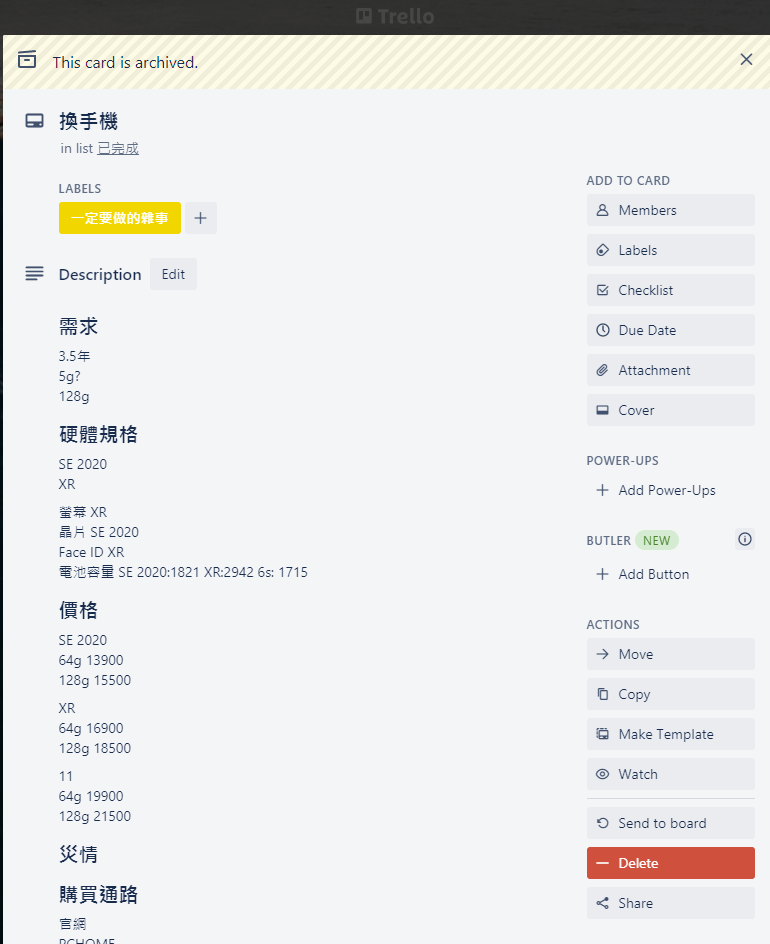
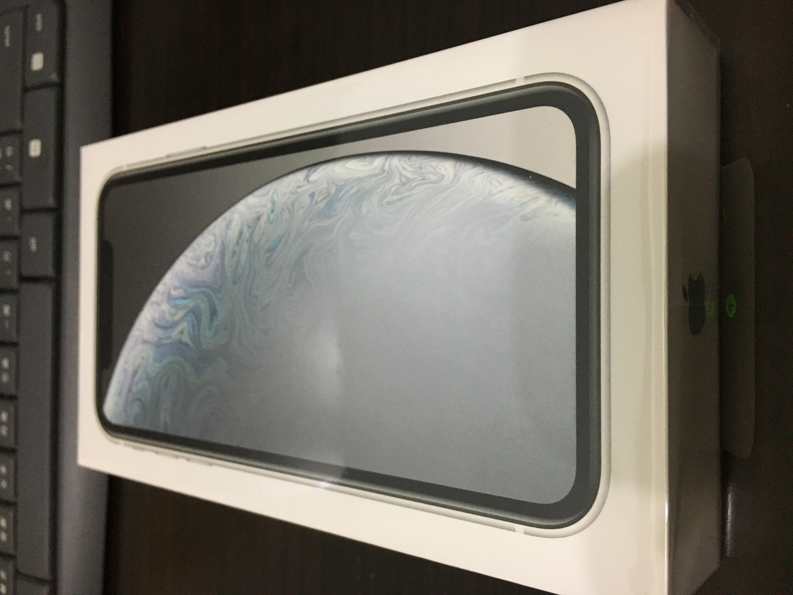

購買過程中都是用Trello卡片紀錄, 這一篇的內容是從Trello的卡片重新整理

前情提要
2020年12月初左右發現iPhone 6s用沒幾下電量就迅速滑落, 重點是手機背板的地方非常燙, 可以在冬天當暖暖包的燙XD, 回高雄給之前換電池的店家檢測是主機板漏電問題, 由於維修主機板無法當天取件, 就決定回新竹找維修店, 最後店家檢測是前鏡頭元件有漏電的現象, 這一去就是兩個禮拜, 也發現2020年這個時代沒有手機的時候對自己所造成的影響, 思考了一下可能的替代方案
決定更換手機
最後換了前鏡頭似乎還是沒有解決異常耗電和手機背板發燙的問題, 決定換手機了XD
很久沒有購買高單價的物品了, 趁著這次機會練習一下是否能夠試著找到自己的需求並依照需求和預算之間的trade-off進行有意識地消費行為吧
需求
前兩支智慧型手機, 第一支是HTC的蝴蝶機, 大概使用3年(2013 - 2016/12), 第二支是iPhone 6s, 大概使用4年(2017/01 - 2021/01)
由此觀察, 自己針對手機的使用習慣比較偏向用到不能再用才會更換, 例如: 慢到無法忍受, 電池異常耗電和發燙, 所以第一個考量點會是: 耐用性高
第二個考量點是ROM, 這部分觀察自己的真實使用資料, iPhone 6s的容量是128 GB, 觀察可用空間大概還有90 GB, 理論上64 GB應該就夠用, 不過考量使用爽度, 緩衝空間和價錢之後, 128 GB是理想值
第三個考量點是通訊技術的支援, 在2021年就是支援5G與否, 但思考一下本身的使用習慣並不會這麼迫切地需要, 所以暫時不支援也沒有關係
第四個考量點是預算, 2017年初購買iPhone 6s時大約是18500, 基本上以此為上限標準, 以18500使用4年的情況, 大約每個月的支出是NT$385
收斂一下, 整理如下:
- 耐用性高: 預計使用3.5年
- ROM: 128 GB
- 支援5G: 可有可無
- 預算: $18500左右或以下
候選名單
從手機本體考量的角度有硬體規格和災情, 從預算考量的角度有價格和通路
2020/10剛換遠傳合約到2022/10, 決定看空機, 前期先看iPhone陣營, 先到官網查, 以預算$18500左右, 在2020/12大概有幾個候選: SE 2020, XR, 11
| SE 2020 | XR | 11 | |
|---|---|---|---|
| 64G | $13900 | $16900 | $19900 |
| 128G | $15500 | $18500 | $21500 |
想了一下要不要捏一下衝11 64G, 最後想說還是用128G比較爽快, 所以留下兩個候選, 接著開始看硬體規格
| SE 2020 | XR | |
|---|---|---|
| 螢幕 | 4.7吋 (IPS) | 6.1吋 (IPS) |
| 晶片 | A13 | A12 |
| 解鎖方式 | Touch ID | Face ID |
| 電池容量 | 1821 mAh | 2942 mAh |
依使用習慣來看, 我比較喜歡可以單手掌握的SE和Touch ID, 但最後決定的因素其實是電池容量, iPhone 6s是1715 mAh, 這次想試試看容量較大的手機, 災情的話到ptt MobileComm搜尋一下, 兩個候選好像沒有都特別的消息, 印象中有些留言會說SE電池容量不太夠用, 但以我使用iPhone 6s的習慣其實是可以接受的
有天突發奇想, 找了一下Google Pixel系列, 在2020/12有Google Pixel 5, 價格大概是$18990, 支援5G, 電池容量4080 mAh, 這下頭痛了, 符合需求且和iPhone系列相比支援5G, 價位差不多和iPhone XR相同, 理性上應該要選擇Google Pixel 5, 但是想到要移轉APP, 我的懶惰病就發作了XD, 且考量iPhone 6s的使用體驗很好, 所以還是暫時龜在iPhone陣營了XD
| SE 2020 | XR | Pixel 5 | |
|---|---|---|---|
| 螢幕 | 4.7吋 (IPS) | 6.1吋 (IPS) | 6吋 (OLED) |
| 晶片 | A13 | A12 | Qualcomm Snapdragon 765G |
| 解鎖方式 | Touch ID | Face ID | - |
| 電池容量 | 1821 mAh | 2942 mAh | 4080 mAh |
就決定是iPhone XR了
通路的部分考慮官網, PCHOME, 地標網通和Costco(和官網比省了700-1000), PCHOME上XR只剩下福利機, Costco沒賣XR, 本來想試試看地標網通, 找了一下網路上別人的經驗但我就懶的症頭又發作了, 最後就從官網下單, 然後要開始找手機殼和保護膜, 等機體到貨就裝上手機殼去貼膜, 可以現場測試並修正, 避免先貼膜再裝手機殼造成保護膜不合的位移
手機殼和保護貼
手機殼也是非常多選擇, 用習慣犀牛盾了且剛好可以用生日禮金折價200
保護貼也是百百種, 很多名詞, 例如: 2.5D鋼化玻璃保護貼9H, 2.5D/3D差異在螢幕邊緣是否有延伸, 要注意使用手機殼的話就貼2.5D
9H硬度的玻璃膜不是莫氏硬度中的9，而是鉛筆的9H硬度，其硬度約為莫式硬度的4
找到幾個牌子:imos, 閃魔, hoda, City Boss, 其中imos相對的價位較高, 但其實我也判斷不出個別的好壞和價值, 最後在Nova的店家貼了hoda
參考
移轉
移轉算是沒有太多痛苦, 大概半天可以完成, 主要是帳戶需要重新登入
iPhone 6s to iPhone XR
- 實體距離接近時, XR出現移轉程序畫面, 登入apple id後, 移轉時間大約10分鐘內
- iCloud to iPhone XR, 主要是下載APP時間較長
APP
- Authenticator匯出匯入
- Line移轉
- Teams重新登入
- Garmin Connect, 舊手機解除藍芽
趁著這次機會, 檢視常用的APP
- Trello
- 備忘錄(ios)
- MOZE 3.0
- 天氣即時預報
- FaceTime
- Whoscall
- Google Maps
- T-EX行動購票
- 台鐵列車動態
- 台鐵e訂通
- Bus+
- MRT Express Lite
- 停車大聲公
- 桃園國際機場
- 國道一路通
- LOOK即時影像
- 台灣大車隊
- 網路銀行
- 富邦e點通
- 雲端發票
- Xe
- Garmin Connect
總結

- 支出總計: $19770
- 手機空機: iPhone XR 128G, $18500
- 保護殼: 犀牛盾犀牛盾Mod NX (玩具總動員-胡迪與巴斯光年-復古風), $980 - $200(生日禮金)
- 保護貼:Hoda 2.5D, $490
- 預計使用3-3.5年
- 2021/02-2024/08
以19770使用3.5年的情況, 大約每個月的支出是NT$470
發現自己對於物品的使用習慣傾向一個東西使用時間長, 以年為單位消費一次, 一方面是習慣, 另一方面是怕轉換麻煩, 以較深層來看或許是自己害怕變動造成的影響